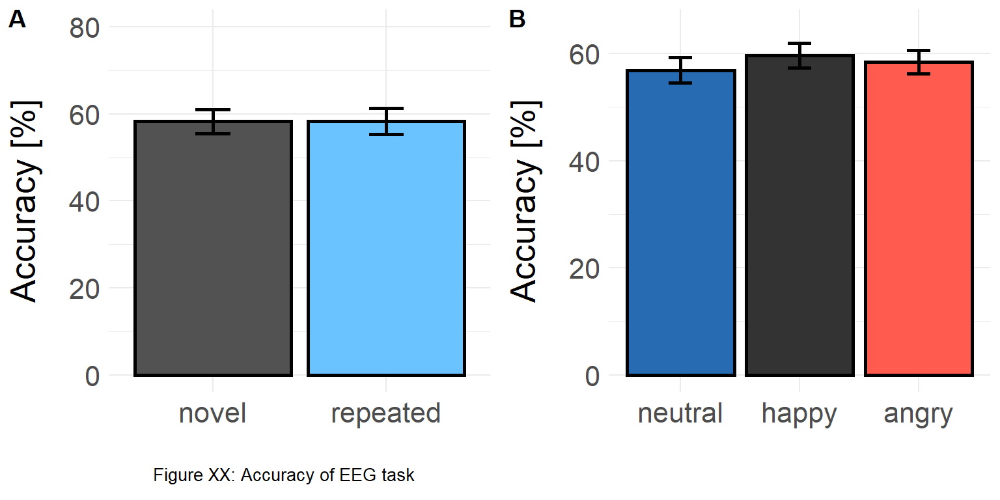
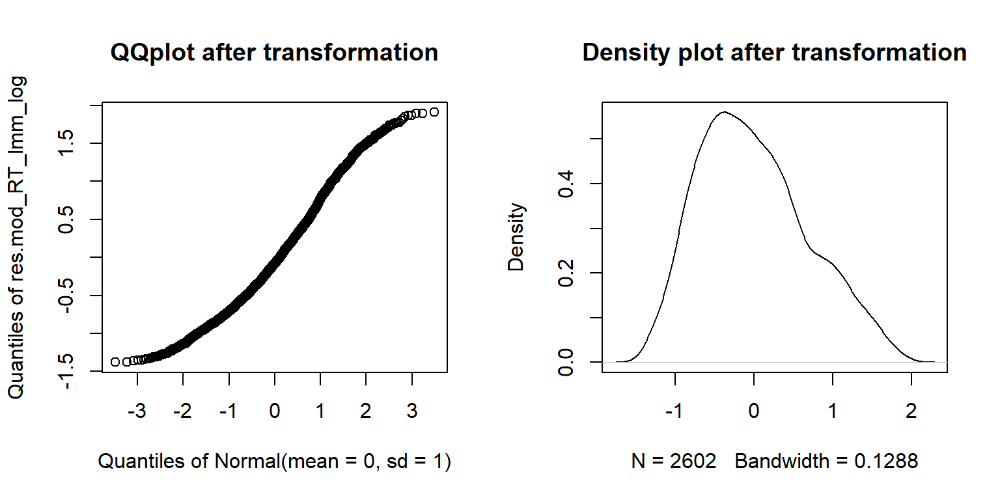
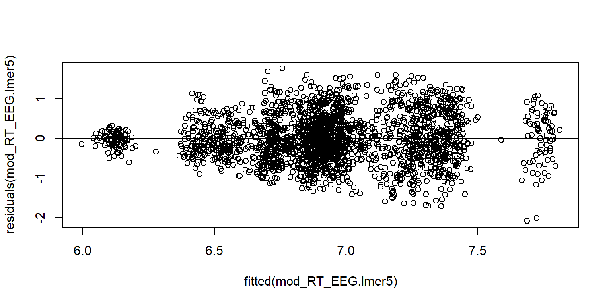
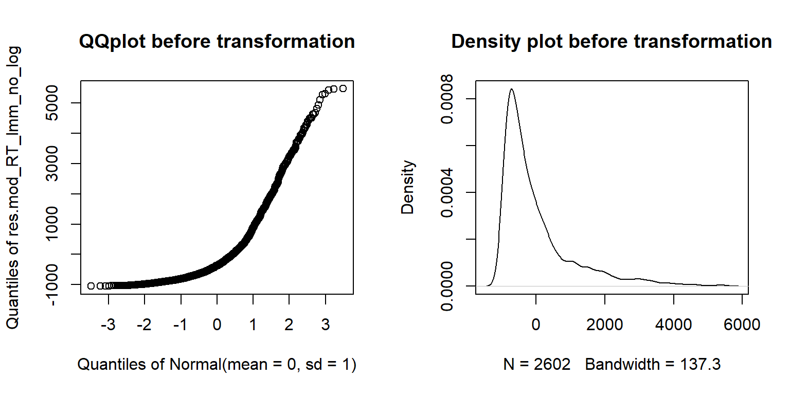
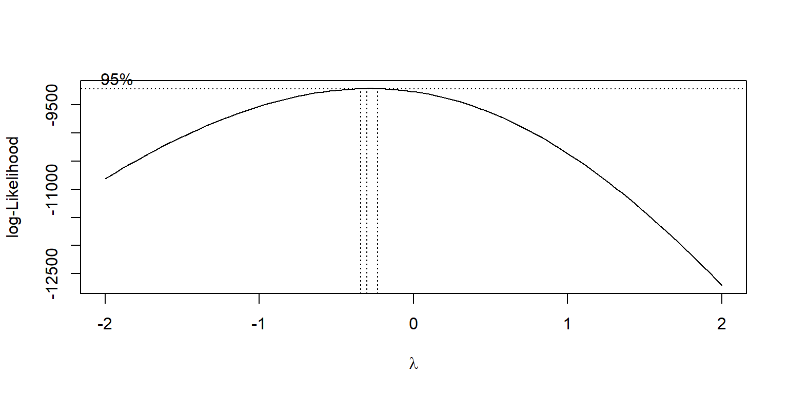
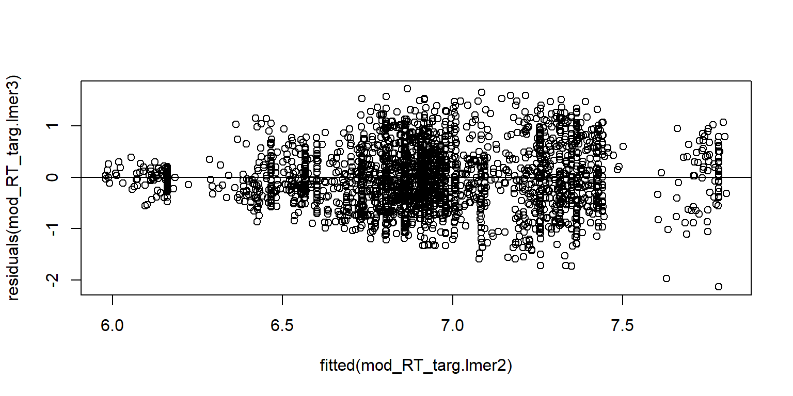
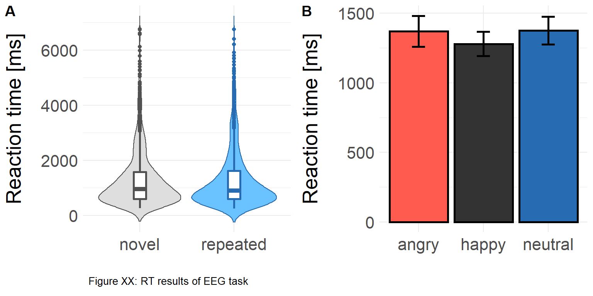

EEG task measures
# Load and prepare datasets -----------------------------------------------
# Load Questionnaire data -----------------------------------------------
# Load data based on script: R_Script_1_Method_Section
QN_data = readRDS("./data/QN_data.rds", refhook = NULL)
# Concatenate EEG task data ------------------------------------
# Get stimulus information
Stim_data = readWorksheetFromFile("./data/Stim_Descr.xlsx",
sheet = 1,
startCol = 1,
endCol = 0) # 0 takes into account all columns starting from startCol
# List files of Accuracy/RT within a folder and get number of participants
files_RT = list.files(path = "./data/EEG_task_data", pattern="*.txt")
nfiles = length(files_RT)
# Combine single trials of participants into data frame
for (i in 1:nfiles) {
# Get RT file per subject
Indiv_RT = read.delim(file=paste("./data/EEG_task_data/",files_RT[i], sep = ""), header = TRUE, sep = "\t", dec = ".")
# Add ID
Indiv_RT$ID = substr(files_RT [i],1,2)
if (i==1) {
EEG_behav_data = Indiv_RT # first round: create EEG_behav_data data frame
} else {
EEG_behav_data = rbind(EEG_behav_data,Indiv_RT) # add to EEG_behav_data data frame
}
remove(Indiv_RT) # Clear previous participant
}
# Add Congruency (novel vs repeated)
# (p=prime, c=congruent [will be recoded into repeated], ic=incongruent [will be recoded into novel])
# 1 - p_happy; 2 - p_neutral; 3 - p_angry
# 4 - c_happy / repeated happy ; 5 - c_neutral / repeated neutral; 6 - c_angry / repeated angry
# 7 - ic_happy / novel happy; 8 - ic_neutral / novel neutral; 9 - ic_angry / novel angry
# 1 for repeated, 2 for novel
EEG_behav_data$Cong[EEG_behav_data$Emo_Target == 4 |EEG_behav_data$Emo_Target == 5 |EEG_behav_data$Emo_Target == 6] = 1
EEG_behav_data$Cong[EEG_behav_data$Emo_Target == 7 |EEG_behav_data$Emo_Target == 8 |EEG_behav_data$Emo_Target == 9] = 2
# Get columns of interest (and bring them in order)
EEG_behav_data = EEG_behav_data [c("ID", "Trial", "Block","Response","RTs","Cong","Emo_Prime","Emo_Target")]
names(EEG_behav_data)[names(EEG_behav_data) == "Emo_Prime"] = "Prime"
names(EEG_behav_data)[names(EEG_behav_data) == "Emo_Target"] = "Target"
# Change block numeration for all participants
# Participant 1 and 2 have wrong coding for block numbers (show "1" for all 144 trials)
xtabs(~ID+Block,EEG_behav_data)
# Create blocks
block_count = rep(1:3, times=32, each=48)
EEG_behav_data$Block = block_count
# Re-check - OK
xtabs(~ID+Block,EEG_behav_data)
# Add trial numbers to match with EEG data
trial_eeg_count = rep(1:144, times=32)
EEG_behav_data$Trial_EEG = trial_eeg_count
# Check trials for EEG - OK
xtabs(~ID+Trial_EEG,EEG_behav_data)
# Check trials - OK
data.frame(xtabs(~ID+Trial,EEG_behav_data))
# Check congruency - one trial more for novel condition compared to repeated condition
xtabs(~ID+Cong,EEG_behav_data)
# Check prime (48 happy, 49 neutral, 47 angry)
xtabs(~ID+Prime,EEG_behav_data)
# Check target (all 24, except for c_angry: 23 and ic_angry: 25)
xtabs(~ID+Target,EEG_behav_data)
# Add age and working memory score
# Change QN_data ID format to ID format of EEG_behav_data
IDs = c(paste("0",c(1,2,4,6:9), sep=""), paste(c(10:33), sep=""))
QN_data$ID = IDs
EEG_behav_data$Age = QN_data$age[match(EEG_behav_data$ID,QN_data$ID,nomatch = NA)]
EEG_behav_data$WM = QN_data$WM[match(EEG_behav_data$ID,QN_data$ID,nomatch = NA)]
# Add randomization / stimulus info
# Match with randomization
EEG_behav_data$EEG_Random = QN_data$random_EEG[match(EEG_behav_data$ID,QN_data$ID,nomatch = NA)]
# Subset for randomization 1 and 2
EEG_behav_data_R1 = subset(EEG_behav_data, EEG_Random == "R1")
EEG_behav_data_R2 = subset(EEG_behav_data, EEG_Random == "R2")
# Subset for the randomizations
Stim_Data_R1 = subset(Stim_data, Randomization == "R1")
Stim_Data_R2 = subset(Stim_data, Randomization == "R2")
# Option "times" refers to number of participants for each randomization
stimuli_R1 = rep(Stim_Data_R1$Identity, times=16, each=1)
stimuli_R2 = rep(Stim_Data_R2$Identity, times=15, each=1)
EEG_behav_data_R1$Stim_Type = stimuli_R1
EEG_behav_data_R2$Stim_Type = stimuli_R2
# Bind R1 and R2 together to one column and add it to all subjects data
EEG_behav_data = rbind(EEG_behav_data_R1,EEG_behav_data_R2)
# Check randomization - OK
xtabs(~ID+EEG_Random,EEG_behav_data)
# Check stim_type - Slightly unbalanced: R2 have m10 three times, but f10 only one time
xtabs(~ID+Stim_Type,EEG_behav_data)
# Switch error and accuracy rate of participant 02 & 04
# Two children (02,04) mixed up the button order (< 25 % accuracy).
# We switched their error and accuracy rate.
# Every 0 is going to become 1 and every 1 is going to become a 0.
EEG_behav_data$Response[EEG_behav_data$ID == '02' & EEG_behav_data$Response == 1] = 2
EEG_behav_data$Response[EEG_behav_data$ID == '02' & EEG_behav_data$Response == 0] = 1
EEG_behav_data$Response[EEG_behav_data$ID == '02' & EEG_behav_data$Response == 2] = 0
EEG_behav_data$Response[EEG_behav_data$ID == '04' & EEG_behav_data$Response == 1] = 2
EEG_behav_data$Response[EEG_behav_data$ID == '04' & EEG_behav_data$Response == 0] = 1
EEG_behav_data$Response[EEG_behav_data$ID == '04' & EEG_behav_data$Response == 2] = 0
# Data inspection & cleaning ----------------------------------------------
# Create variables which capture RT outliers (TRUE = outlier, FALSE = kept for further analyses)
EEG_behav_data$Exclude_smaller_250ms = FALSE
EEG_behav_data$Exclude_larger_7s = FALSE
EEG_behav_data$Exclude_MAD = FALSE
# Clean RTs for values < 250 ms
EEG_behav_data$Exclude_smaller_250ms[EEG_behav_data$RTs <=250] = TRUE
# Clean RTs for values < 10 s
EEG_behav_data$Exclude_larger_7s[EEG_behav_data$RTs >=7000] = TRUE
# Calculate the median absolute deviation for each participant
# Define IDs
IDs = c(paste("0",c(2,4,6:9), sep=""), paste(c(10:33), sep=""))
MAD_cutoff = 2.5
for (m in 1:length(IDs)) {
EEG_behav_data_outl_ind = subset (EEG_behav_data[EEG_behav_data$Exclude_smaller_250ms==FALSE|EEG_behav_data$Exclude_larger_7s==FALSE,], ID == IDs[m])
# Identify outliers +/- 2.5 times the MAD
MAD_ind = mad(EEG_behav_data_outl_ind$RTs)
EEG_behav_data[EEG_behav_data$ID==IDs[m],]$Exclude_MAD[EEG_behav_data_outl_ind$RTs < MAD_ind-MAD_cutoff*MAD_ind | EEG_behav_data_outl_ind$RTs > MAD_ind+MAD_cutoff*MAD_ind] = TRUE
}
# De-select excluded participant
EEG_behav_data = EEG_behav_data[with(EEG_behav_data, !(EEG_behav_data$ID=="05")), ] 3.1 EEG task measures
3.1.1 Accuracy
Assumption checks
GLMM 1: Random effect structure
# Select outlier-free data
EEG_behav_Acc_glmm = subset(EEG_behav_data,Exclude_smaller_250ms == FALSE & Exclude_larger_7s == FALSE & Exclude_MAD == FALSE)
# Factor random effects
EEG_behav_Acc_glmm$ID = as.factor(EEG_behav_Acc_glmm$ID)
EEG_behav_Acc_glmm$Stim_Type = as.factor(EEG_behav_Acc_glmm$Stim_Type)
# Factor fixed factor congruency
EEG_behav_Acc_glmm$Cong[EEG_behav_Acc_glmm$Cong==1] = "repeated"
EEG_behav_Acc_glmm$Cong[EEG_behav_Acc_glmm$Cong==2] = "novel"
EEG_behav_Acc_glmm$Cong = factor(EEG_behav_Acc_glmm$Cong)
# Set effect coding contrast
contrasts(EEG_behav_Acc_glmm$Cong) = contr.sum(2)/2
# 1) Construct full model
# Create contrast matrix
mm_c = model.matrix( ~ Cong, EEG_behav_Acc_glmm)
# Attach to dataframe
EEG_behav_Acc_glmm = EEG_behav_Acc_glmm
EEG_behav_Acc_glmm[,(ncol(EEG_behav_Acc_glmm)+1):(ncol(EEG_behav_Acc_glmm)+2)] = mm_c
names(EEG_behav_Acc_glmm)[(ncol(EEG_behav_Acc_glmm)-1):ncol(EEG_behav_Acc_glmm)] = c("Grand Mean", "Repeated_Novel")
# Build full model
mod_Acc_EEG.glmm1 = glmer(Response ~ Repeated_Novel + scale(Age) + scale(WM) +
(1 + Repeated_Novel||ID) +
(1 + Repeated_Novel||Stim_Type),
data = EEG_behav_Acc_glmm,control=glmerControl(calc.derivs = FALSE),
family = binomial)
# 2) Check random effect structure
# PCA to check random effect structure (whether all random terms explain variance)
# if you do not take them out: over-parametrization of model (+ to control for type 1 error)
# cut-off: 0.005 - 0.001 (everything below does not explain enough variance )
# 1st: check how many zero variance terms you got in random effects
summary(rePCA(mod_Acc_EEG.glmm1))## $Stim_Type
## Importance of components:
## [,1] [,2]
## Standard deviation 0.300 0.123
## Proportion of Variance 0.856 0.144
## Cumulative Proportion 0.856 1.000
##
## $ID
## Importance of components:
## [,1] [,2]
## Standard deviation 1.647 1.090
## Proportion of Variance 0.695 0.305
## Cumulative Proportion 0.695 1.000 # 2nd: check which random terms explain the least variance
print(VarCorr(mod_Acc_EEG.glmm1),comp = "Variance")## Groups Name Variance
## Stim_Type Repeated_Novel 0.0901
## Stim_Type.1 (Intercept) 0.0152
## ID Repeated_Novel 2.7117
## ID.1 (Intercept) 1.1880 # 3rd: Likelihood-ratio-testing
mod_Acc_EEG.glmm2 = glmer(Response ~ Repeated_Novel + scale(Age) + scale(WM) +
(1 | ID) +
(1 + Repeated_Novel||Stim_Type),
data = EEG_behav_Acc_glmm,control=glmerControl(calc.derivs = FALSE),
family = binomial)
mod_Acc_EEG.glmm3 = glmer(Response ~ Repeated_Novel + scale(Age) + scale(WM) +
(1 + Repeated_Novel||ID) +
(1 |Stim_Type),
data = EEG_behav_Acc_glmm,control=glmerControl(calc.derivs = FALSE),
family = binomial)
# Calculate ANOVAs
anov_glmm1_glmm2 = anova(mod_Acc_EEG.glmm1,mod_Acc_EEG.glmm2)
anov_glmm1_glmm3 = anova(mod_Acc_EEG.glmm1,mod_Acc_EEG.glmm3)
# Final model
mod_Acc_EEG.glmm4 = glmer(Response ~ Repeated_Novel + scale(Age) + scale(WM) +
(1 + Repeated_Novel||ID) +
(1 |Stim_Type),
data = EEG_behav_Acc_glmm,control=glmerControl(calc.derivs = FALSE),
family = binomial)GLMM 1: Overdispersion
# 3) Assumption check: Appropriate estimation of variance (no overdispersion)
overdisp_fun(mod_Acc_EEG.glmm4)## chisq ratio rdf p
## 2725.06 0.87 3139.00 1.00If the p-value is < 0.05, the data are overdispersed. Here p > 0.05. Hence overdispersion is not a problem.
GLMM 2: Random effect structure
# Build model & check assumptions -----------------------------------------
# Get outlier-free data
EEG_behav_Acc_targ_glmm = subset(EEG_behav_data, Exclude_smaller_250ms == FALSE & Exclude_larger_7s == FALSE & Exclude_MAD == FALSE)
# Rename variables
EEG_behav_Acc_targ_glmm$Target[EEG_behav_Acc_targ_glmm$Target==4] = "hap"
EEG_behav_Acc_targ_glmm$Target[EEG_behav_Acc_targ_glmm$Target==5] = "neu"
EEG_behav_Acc_targ_glmm$Target[EEG_behav_Acc_targ_glmm$Target==6] = "ang"
EEG_behav_Acc_targ_glmm$Target[EEG_behav_Acc_targ_glmm$Target==7] = "hap"
EEG_behav_Acc_targ_glmm$Target[EEG_behav_Acc_targ_glmm$Target==8] = "neu"
EEG_behav_Acc_targ_glmm$Target[EEG_behav_Acc_targ_glmm$Target==9] = "ang"
# Create factor, get neutral as baseline
EEG_behav_Acc_targ_glmm$Target = factor(EEG_behav_Acc_targ_glmm$Target, levels=c("neu","hap","ang"))
EEG_behav_Acc_targ_glmm$ID = as.factor(EEG_behav_Acc_targ_glmm$ID)
EEG_behav_Acc_targ_glmm$Stim_Type = as.factor(EEG_behav_Acc_targ_glmm$Stim_Type)
# Set treatment contrast
contrasts(EEG_behav_Acc_targ_glmm$Target) = contr.treatment(3)
# 1) Construct full model
# Add contrast columns
mm_c = model.matrix( ~ Target, EEG_behav_Acc_targ_glmm)
# Attach to dataframe
EEG_behav_Acc_targ_glmm[,(ncol(EEG_behav_Acc_targ_glmm)+1):(ncol(EEG_behav_Acc_targ_glmm)+3)] = mm_c
names(EEG_behav_Acc_targ_glmm)[(ncol(EEG_behav_Acc_targ_glmm)-2):ncol(EEG_behav_Acc_targ_glmm)] = c("Mean","Neu_Hap", "Neu_Ang")
# Build full model
mod_Acc_targ.glmm1 = glmer(Response ~ Neu_Hap + Neu_Ang + scale(Age) + scale(WM)
+ (1 + Neu_Hap + Neu_Ang||ID)
+ (1 + Neu_Hap + Neu_Ang||Stim_Type),
data = EEG_behav_Acc_targ_glmm,
control=glmerControl(calc.derivs = FALSE),
family = binomial)
# 2) Check random effect structure
# PCA to check random effect structure (whether all random terms explain variance)
# if you do not take them out: over-parametrization of model (+ to control for type 1 error)
# cut-off: 0.005 - 0.001 (everything below does not explain enough variance )
# 1st: check how many zero variance terms you got in random effects
summary(rePCA(mod_Acc_targ.glmm1))## $Stim_Type
## Importance of components:
## [,1] [,2] [,3]
## Standard deviation 0.354 0.334 0.00114
## Proportion of Variance 0.530 0.470 0.00001
## Cumulative Proportion 0.530 1.000 1.00000
##
## $ID
## Importance of components:
## [,1] [,2] [,3]
## Standard deviation 1.057 0.1395 0.000656
## Proportion of Variance 0.983 0.0171 0.000000
## Cumulative Proportion 0.983 1.0000 1.000000 # 2nd: check which random terms explain the least variance
print(VarCorr(mod_Acc_targ.glmm1),comp = "Variance")## Groups Name Variance
## Stim_Type Neu_Ang 0.11129620
## Stim_Type.1 Neu_Hap 0.12546092
## Stim_Type.2 (Intercept) 0.00000130
## ID Neu_Ang 0.01945516
## ID.1 Neu_Hap 0.00000043
## ID.2 (Intercept) 1.11740863 # Re-build model
mod_Acc_targ.glmm2 = glmer(Response ~ Neu_Hap + Neu_Ang + scale(Age) + scale(WM)
+ (1 + Neu_Ang||ID)
+ (0 + Neu_Hap + Neu_Ang||Stim_Type),
data = EEG_behav_Acc_targ_glmm,
control=glmerControl(calc.derivs = FALSE),
family = binomial)
# Re-check random structure
summary(rePCA(mod_Acc_targ.glmm2))## $Stim_Type
## Importance of components:
## [,1] [,2]
## Standard deviation 0.354 0.334
## Proportion of Variance 0.530 0.470
## Cumulative Proportion 0.530 1.000
##
## $ID
## Importance of components:
## [,1] [,2]
## Standard deviation 1.057 0.139
## Proportion of Variance 0.983 0.017
## Cumulative Proportion 0.983 1.000 print(VarCorr(mod_Acc_targ.glmm2),comp = "Variance")## Groups Name Variance
## Stim_Type Neu_Ang 0.1113
## Stim_Type.1 Neu_Hap 0.1254
## ID Neu_Ang 0.0194
## ID.1 (Intercept) 1.1170 # 3) Likelihood-ratio testing
mod_Acc_targ.glmm3 = glmer(Response ~ Neu_Hap + Neu_Ang + scale(Age) + scale(WM)
+ (1 |ID)
+ (0 + Neu_Hap + Neu_Ang||Stim_Type),
data = EEG_behav_Acc_targ_glmm,
control=glmerControl(calc.derivs = FALSE),
family = binomial)
mod_Acc_targ.glmm4 = glmer(Response ~ Neu_Hap + Neu_Ang + scale(Age) + scale(WM)
+ (1 + Neu_Ang||ID)
+ (1|Stim_Type),
data = EEG_behav_Acc_targ_glmm,
control=glmerControl(calc.derivs = FALSE),
family = binomial)
# Calculate ANOVAs
anov_glmm2_glmm3 = anova(mod_Acc_targ.glmm2,mod_Acc_targ.glmm3)
anov_glmm2_glmm4 = anova(mod_Acc_targ.glmm2,mod_Acc_targ.glmm4)
# Final model
mod_Acc_targ.glmm5 = glmer(Response ~ Neu_Hap + Neu_Ang + scale(Age) + scale(WM)
+ (1 |ID)
+ (0 + Neu_Hap + Neu_Ang||Stim_Type),
data = EEG_behav_Acc_targ_glmm,
control=glmerControl(calc.derivs = FALSE),
family = binomial)GLMM 2: Overdispersion
# 3) Assumption check: Appropriate estimation of variance (no overdispersion)
overdisp_fun(mod_Acc_targ.glmm5)## chisq ratio rdf p
## 2813.2 0.9 3138.0 1.0If the p-value is < 0.05, the data are overdispersed. Here p > 0.05. Hence overdispersion is not a problem.
We evaluated whether children were more accurate in detecting an emotion they had seen emotion before (See Figure X A). We constructed a GLMM with novelty as fixed effect factor and chronological age and working memory as covariates. The model with the best fit included an intercept for participant with a random slope for novelty and a random intercept for stimulus. Model results indicated that participants were equally accurate in trials with repeated in comparison to a novel emotion at “face 2” (\(\hat{β}\) = <0.001 , p = 1.00, OR = 1.00 [95% CI: -0.64, 2.64]).
# Select outlier-free data and correct trials
EEG_behav_Acc_plot = subset(EEG_behav_data,Exclude_smaller_250ms == FALSE & Exclude_larger_7s == FALSE & Exclude_MAD == FALSE)
EEG_behav_Acc_plot = subset(EEG_behav_Acc_plot,Response == 1)
# Recode variable
EEG_behav_Acc_plot$Cong[EEG_behav_Acc_plot$Cong==1] = "repeated"
EEG_behav_Acc_plot$Cong[EEG_behav_Acc_plot$Cong==2] = "novel"
# Get accuracy for novel and repeated condition
acc_all = data.frame(xtabs(~ID+Cong, EEG_behav_Acc_plot))
# Recode to accuracy in percent
# 72 novel trials, 72 repeated trials
acc_all$Freq = (acc_all$Freq/72)*100
# Factor condition
acc_all$Cong = as.factor(acc_all$Cong)
# Calculate descriptives on accuracy
stats_acc_all = summarySE(acc_all, measurevar="Freq", groupvars=c("Cong"))
# Plot accuracy
EEG_acc_plot=ggplot(stats_acc_all, aes(x=Cong, y=Freq, fill = Cong)) +
geom_bar(position=position_dodge(), stat="identity",colour="black", size=1,width=0.9) +
geom_errorbar(aes(ymin=Freq-se, ymax=Freq+se), size=1, width=0.2, position=position_dodge(.9)) +
labs (x= "", y = "Accuracy [%]") +
ylim(0, 80) +
scale_fill_manual(values=c("gray32","#6AC2FF"))+
theme_minimal()+
theme(axis.title.y = element_text(size = 20, margin = margin(t = 0, r = 20, b = 0, l = 0)),
text=element_text(size = 20, family = "Segoe UI"),
legend.position = "none")
# Plot separated by emotions
# Select outlier-free data and correct trials
EEG_behav_Acc_targ_plot = subset(EEG_behav_data, Exclude_smaller_250ms == FALSE & Exclude_larger_7s == FALSE & Exclude_MAD == FALSE)
EEG_behav_Acc_targ_plot = subset(EEG_behav_Acc_targ_plot,Response == 1)
# Recode variable
EEG_behav_Acc_targ_plot$Target[EEG_behav_Acc_targ_plot$Target==4] = "happy"
EEG_behav_Acc_targ_plot$Target[EEG_behav_Acc_targ_plot$Target==5] = "neutral"
EEG_behav_Acc_targ_plot$Target[EEG_behav_Acc_targ_plot$Target==6] = "angry"
EEG_behav_Acc_targ_plot$Target[EEG_behav_Acc_targ_plot$Target==7] = "happy"
EEG_behav_Acc_targ_plot$Target[EEG_behav_Acc_targ_plot$Target==8] = "neutral"
EEG_behav_Acc_targ_plot$Target[EEG_behav_Acc_targ_plot$Target==9] = "angry"
EEG_behav_Acc_targ_plot$Target = factor(EEG_behav_Acc_targ_plot$Target, levels=c("neutral","happy","angry"))
# Get accuracy for novel and repeated condition
acc_emo = data.frame(xtabs(~ID+Target, EEG_behav_Acc_targ_plot))
# Recode to accuracy in percent
# 48 happy trials, 49 neutral trials, 47 angry trials
acc_emo$Freq[acc_emo$Target== "happy"] = (acc_emo$Freq[acc_emo$Target== "happy"]/48)*100
acc_emo$Freq[acc_emo$Target== "neutral"] = (acc_emo$Freq[acc_emo$Target== "neutral"]/49)*100
acc_emo$Freq[acc_emo$Target== "angry"] = (acc_emo$Freq[acc_emo$Target== "angry"]/47)*100
# Factor condition
acc_emo$Target = as.factor(acc_emo$Target)
# Calculate descriptives on accuracy
stats_acc_emo = summarySE(acc_emo, measurevar="Freq", groupvars=c("Target"))
# Plot accuracy
EEG_acc_emo_plot=ggplot(stats_acc_emo, aes(x=Target, y=Freq, fill = Target)) +
geom_bar(position=position_dodge(), stat="identity",colour="black", size=1,width=0.9) +
geom_errorbar(aes(ymin=Freq-se, ymax=Freq+se), size=1, width=0.2, position=position_dodge(.9)) +
labs (x= "", y = "Accuracy [%]") +
ylim(0, 65) +
scale_fill_manual(values= c("#276CB3","gray20","#FF5B4F"))+
theme_minimal()+
theme(axis.title.y = element_text(size = 20, margin = margin(t = 0, r = 20, b = 0, l = 0)),
text=element_text(size = 20, family = "Segoe UI"),
legend.position = "none")
# Combine plots
combine_plots(EEG_acc_plot, EEG_acc_emo_plot,
ncol = 2, nrow=1,
labels = c("A", "B"),
caption.color = "black",
caption.vjust = 0,
caption.hjust = 1.3,
caption.text = "Figure XX: Accuracy of EEG task ")
We built an additional GLMM separated by emotions of “face 2” to identify potential matching differences elicited by emotion. We averaged across trials with repeated and novel emotions for “face 2”. As a fixed factor, we used emotion (happy vs neutral and angry vs neutral).The final model was comprised of a random intercept for participant and a random slope for emotion, with no random intercept for stimulus. Descriptively, participants showed the highest accuracy when happy faces were presented as “face 2” (See Figure X B). This difference, however, is not significant in comparison to neutral faces (\(\hat{β}\) = 0.16 , p = 0.17, OR = 1.17 [95% CI: -0.76, 1.17]; see Table X). Similarly, there was no significant difference between angry and neutral faces presented as “face 2” (\(\hat{β}\) = 0.03 , p = 0.82, OR = 1.03 [95% CI: -0.66, 1.03).
# Create labels
labels = c("Intercept","Novel vs Repeated","Age","Working memory", "Neutral vs Happy", "Neutral vs Angry")
# Create table
tab_model(mod_Acc_EEG.glmm4, mod_Acc_targ.glmm5,
pred.labels=labels, show.ci = FALSE,
show.se=TRUE, show.stat=TRUE, string.se = "SE",
show.re.var=FALSE, show.obs=FALSE,
emph.p = TRUE, dv.labels=c("Accuracy","") , show.icc = FALSE)| Accuracy | ||||||||
|---|---|---|---|---|---|---|---|---|
| Predictors | Odds Ratios | SE | Statistic | p | Odds Ratios | SE | Statistic | p |
| Intercept | 4.37 | 0.21 | 6.88 | <0.001 | 3.80 | 0.22 | 6.18 | <0.001 |
| Novel vs Repeated | 1.00 | 0.33 | -0.00 | 1.000 | ||||
| Age | 0.98 | 0.22 | -0.11 | 0.913 | 0.98 | 0.21 | -0.09 | 0.925 |
| Working memory | 0.79 | 0.22 | -1.10 | 0.271 | 0.78 | 0.21 | -1.16 | 0.246 |
| Neutral vs Happy | 1.17 | 0.12 | 1.38 | 0.168 | ||||
| Neutral vs Angry | 1.03 | 0.11 | 0.23 | 0.815 | ||||
| N | 28 ID | 28 ID | ||||||
| 72 Stim_Type | 72 Stim_Type | |||||||
| Marginal R2 / Conditional R2 | 0.015 / 0.186 | 0.015 / 0.270 | ||||||
Table XX: Results of GLMMs for accuracy of the EEG task
3.1.2 Reaction time
Assumption checks
LMM1: Normality of residuals
# LMM X: Novel trials > Repeated trials ------------------------------------------------------
# Build model & check assumptions -------------------------------------------------------
# Choose outlier-free data and correct answers
EEG_behav_RT_lmm = subset(EEG_behav_data,Exclude_smaller_250ms == FALSE & Exclude_larger_7s == FALSE & Exclude_MAD == FALSE)
EEG_behav_RT_lmm = subset(EEG_behav_RT_lmm, Response == 1)
# Recode for repeated and novel trials
EEG_behav_RT_lmm$Cong[EEG_behav_RT_lmm$Cong==1] = "repeated"
EEG_behav_RT_lmm$Cong[EEG_behav_RT_lmm$Cong==2] = "novel"
# Prepare fixed factors
EEG_behav_RT_lmm$Cong = factor(EEG_behav_RT_lmm$Cong)
# Factor ID and stimulus type
EEG_behav_RT_lmm$Stim_Type = factor(EEG_behav_RT_lmm$Stim_Type)
EEG_behav_RT_lmm$ID = factor(EEG_behav_RT_lmm$ID)
# Define effect coding contrast for novelty
contrasts(EEG_behav_RT_lmm$Cong) = contr.sum(2)/2
# interpretation: intercept = grand average across both conditions, slope = correct-incorrect
# 1) Check properties of DV / residuals
# Visualize normality assumption of residuals (without log transform)
mod_RT_lmm_no_log = lm(RTs ~ Cong, data=EEG_behav_RT_lmm)
res.mod_RT_lmm_no_log = residuals(mod_RT_lmm_no_log)
par(mfrow=c(1,2))
qqpl_RT_lmm_no_log = qqPlot(res.mod_RT_lmm_no_log, main="QQplot before transformation")
norm_RT_lmm_no_log = plot(density(res.mod_RT_lmm_no_log), main="Density plot before transformation") 
par(mfrow=c(1,1))
# Check which transformation of DV is suitable
# Calculate box-cox plot
mod_RT_targ = lm(RTs ~ Cong, data=EEG_behav_RT_lmm)
boxcox(mod_RT_targ) # In that case: Decision to log transform!
# Visualize normality assumption of residuals (with log transform)
mod_RT_lmm_log = lm(log(RTs) ~ Cong, data=EEG_behav_RT_lmm)
res.mod_RT_lmm_log = residuals(mod_RT_lmm_log)
par(mfrow=c(1,2))
qqpl_RT_lmm_log = qqPlot(res.mod_RT_lmm_log, main="QQplot after transformation")
norm_RT_lmm_log = plot(density(res.mod_RT_lmm_log), main="Density plot after transformation") 
par(mfrow=c(1,1))LMM1: Random effect structure
# 3) Construct full model
# First: add covariate structure
# Add contrast as numerical covariate via model matrix in order to enter contrasts individually in model
# Use || to not calculate correlations between slopes / intercepts (not important to generalise)
# Create contrast matrix
mm_c = model.matrix( ~ Cong, EEG_behav_RT_lmm)
# Attach to dataframe
EEG_behav_RT_lmm[,(ncol(EEG_behav_RT_lmm)+1):(ncol(EEG_behav_RT_lmm)+2)] = mm_c
names(EEG_behav_RT_lmm)[(ncol(EEG_behav_RT_lmm)-1):ncol(EEG_behav_RT_lmm)] = c("Grand Mean", "Repeated_Novel")
# Build full model with new names
mod_RT_EEG.lmer1 = lmer(log(RTs) ~ Repeated_Novel + scale(Age) + scale(WM) +
(1 + Repeated_Novel ||ID) +
(1 + Repeated_Novel ||Stim_Type),
data = EEG_behav_RT_lmm,control=lmerControl(calc.derivs = FALSE), REML = FALSE)
# PCA to check random effect structure (whether all random terms explain variance)
# If you do not remove them: over-parametrization of model (+ to control for type 1 error)
# Cut-off: 0.005 - 0.001 (everything below threshold does not explain enough variance )
# 1st: check how many zero variance terms you got in random effects
summary(rePCA(mod_RT_EEG.lmer1))## $Stim_Type
## Importance of components:
## [,1] [,2]
## Standard deviation 0.106 0.000193
## Proportion of Variance 1.000 0.000000
## Cumulative Proportion 1.000 1.000000
##
## $ID
## Importance of components:
## [,1] [,2]
## Standard deviation 0.552 0.194
## Proportion of Variance 0.890 0.110
## Cumulative Proportion 0.890 1.000 # 2nd: check which random terms explain the least variance
print(VarCorr(mod_RT_EEG.lmer1),comp = "Variance")## Groups Name Variance
## Stim_Type Repeated_Novel 0.0000000135
## Stim_Type.1 (Intercept) 0.0040530156
## ID Repeated_Novel 0.0136555446
## ID.1 (Intercept) 0.1106881645
## Residual 0.3628280265 # 3rd: remove all terms with zero variance --> comprises final model
mod_RT_EEG.lmer2 = lmer(log(RTs) ~ Repeated_Novel + scale(Age) + scale(WM) +
(1 + Repeated_Novel||ID) +
(1 + Repeated_Novel||Stim_Type),
data = EEG_behav_RT_lmm,control=lmerControl(calc.derivs = FALSE), REML = FALSE)
# 4th: re-check the model PCA / variance of random factors
summary(rePCA(mod_RT_EEG.lmer2))## $Stim_Type
## Importance of components:
## [,1] [,2]
## Standard deviation 0.106 0.000193
## Proportion of Variance 1.000 0.000000
## Cumulative Proportion 1.000 1.000000
##
## $ID
## Importance of components:
## [,1] [,2]
## Standard deviation 0.552 0.194
## Proportion of Variance 0.890 0.110
## Cumulative Proportion 0.890 1.000 print(VarCorr(mod_RT_EEG.lmer2),comp = "Variance")## Groups Name Variance
## Stim_Type Repeated_Novel 0.0000000135
## Stim_Type.1 (Intercept) 0.0040530156
## ID Repeated_Novel 0.0136555446
## ID.1 (Intercept) 0.1106881645
## Residual 0.3628280265 # 5th: Do Likelihood Ratio Test (LRT) - to check whether all random slopes improve the model
# LRT without random slope Repeated_Novel for ID
mod_RT_EEG.lmer2 = lmer(log(RTs) ~ Repeated_Novel + scale(Age) + scale(WM) +
(1 + Repeated_Novel||ID) +
(1 + Repeated_Novel||Stim_Type),
data = EEG_behav_RT_lmm,control=lmerControl(calc.derivs = FALSE), REML = FALSE)
mod_RT_EEG.lmer3 = lmer(log(RTs) ~ Repeated_Novel + scale(Age) + scale(WM) +
(1 |ID) +
(1 + Repeated_Novel||Stim_Type),
data = EEG_behav_RT_lmm,control=lmerControl(calc.derivs = FALSE), REML = FALSE)
# Calculate ANOVA
anova(mod_RT_EEG.lmer2,mod_RT_EEG.lmer3)## Data: EEG_behav_RT_lmm
## Models:
## mod_RT_EEG.lmer3: log(RTs) ~ Repeated_Novel + scale(Age) + scale(WM) + (1 | ID) +
## mod_RT_EEG.lmer3: (1 + Repeated_Novel || Stim_Type)
## mod_RT_EEG.lmer2: log(RTs) ~ Repeated_Novel + scale(Age) + scale(WM) + (1 + Repeated_Novel ||
## mod_RT_EEG.lmer2: ID) + (1 + Repeated_Novel || Stim_Type)
## Df AIC BIC logLik deviance Chisq Chi Df
## mod_RT_EEG.lmer3 8 4458 4504 -2221 4442
## mod_RT_EEG.lmer2 9 4454 4506 -2218 4436 6.17 1
## Pr(>Chisq)
## mod_RT_EEG.lmer3
## mod_RT_EEG.lmer2 0.013 *
## ---
## Signif. codes: 0 '***' 0.001 '**' 0.01 '*' 0.05 '.' 0.1 ' ' 1 # LRT without random slope Repeated_Novel for Stim_Type
mod_RT_EEG.lmer2 = lmer(log(RTs) ~ Repeated_Novel + scale(Age) + scale(WM) +
(1 + Repeated_Novel||ID) +
(1 + Repeated_Novel||Stim_Type),
data = EEG_behav_RT_lmm,control=lmerControl(calc.derivs = FALSE), REML = FALSE)
mod_RT_EEG.lmer4 = lmer(log(RTs) ~ Repeated_Novel + scale(Age) + scale(WM) +
(1 + Repeated_Novel||ID) +
(1 |Stim_Type),
data = EEG_behav_RT_lmm,control=lmerControl(calc.derivs = FALSE), REML = FALSE)
# Calculate ANOVA
anova(mod_RT_EEG.lmer2,mod_RT_EEG.lmer4)## Data: EEG_behav_RT_lmm
## Models:
## mod_RT_EEG.lmer4: log(RTs) ~ Repeated_Novel + scale(Age) + scale(WM) + (1 + Repeated_Novel ||
## mod_RT_EEG.lmer4: ID) + (1 | Stim_Type)
## mod_RT_EEG.lmer2: log(RTs) ~ Repeated_Novel + scale(Age) + scale(WM) + (1 + Repeated_Novel ||
## mod_RT_EEG.lmer2: ID) + (1 + Repeated_Novel || Stim_Type)
## Df AIC BIC logLik deviance Chisq Chi Df
## mod_RT_EEG.lmer4 8 4452 4498 -2218 4436
## mod_RT_EEG.lmer2 9 4454 4506 -2218 4436 0 1
## Pr(>Chisq)
## mod_RT_EEG.lmer4
## mod_RT_EEG.lmer2 1 # 6th: remove random slopes which did not improve the model
mod_RT_EEG.lmer5 = lmer(log(RTs) ~ Repeated_Novel + scale(Age) + scale(WM) +
(1 + Repeated_Novel||ID) +
(1 |Stim_Type),
data = EEG_behav_RT_lmm,control=lmerControl(calc.derivs = FALSE), REML = FALSE)
# 7th: re-check the model PCA / variance of random factors
summary(rePCA(mod_RT_EEG.lmer5))## $Stim_Type
## Importance of components:
## [,1]
## Standard deviation 0.106
## Proportion of Variance 1.000
## Cumulative Proportion 1.000
##
## $ID
## Importance of components:
## [,1] [,2]
## Standard deviation 0.552 0.194
## Proportion of Variance 0.890 0.110
## Cumulative Proportion 0.890 1.000 print(VarCorr(mod_RT_EEG.lmer5),comp = "Variance")## Groups Name Variance
## Stim_Type (Intercept) 0.00405
## ID Repeated_Novel 0.01365
## ID.1 (Intercept) 0.11064
## Residual 0.36283LMM1: Homoscedasticity
# 4) Check homoscedasticity (Are residuals equally distributed along regression line?)
plot(fitted(mod_RT_EEG.lmer5), residuals(mod_RT_EEG.lmer5))
abline(0, 0) 
LMM2: Normality of residuals
# LMM X: Happy face 2 trials < neutral or angry face 2 trials --------
# Build model & check assumptions -----------------------------------------
# Choose outlier-free data and correct answers
EEG_behav_RT_targ_lmm = subset(EEG_behav_data, Response == 1)
EEG_behav_RT_targ_lmm = subset(EEG_behav_RT_targ_lmm,Exclude_smaller_250ms == FALSE & Exclude_larger_7s == FALSE & Exclude_MAD == FALSE)
# Rename variables
EEG_behav_RT_targ_lmm$Target[EEG_behav_RT_targ_lmm$Target==4] = "hap"
EEG_behav_RT_targ_lmm$Target[EEG_behav_RT_targ_lmm$Target==5] = "neu"
EEG_behav_RT_targ_lmm$Target[EEG_behav_RT_targ_lmm$Target==6] = "ang"
EEG_behav_RT_targ_lmm$Target[EEG_behav_RT_targ_lmm$Target==7] = "hap"
EEG_behav_RT_targ_lmm$Target[EEG_behav_RT_targ_lmm$Target==8] = "neu"
EEG_behav_RT_targ_lmm$Target[EEG_behav_RT_targ_lmm$Target==9] = "ang"
# Create factors, get neutral as baseline
EEG_behav_RT_targ_lmm$Target = factor(EEG_behav_RT_targ_lmm$Target, levels=c("neu","hap","ang"))
EEG_behav_RT_targ_lmm$ID = as.factor(EEG_behav_RT_targ_lmm$ID)
EEG_behav_RT_targ_lmm$Stim_Type = as.factor(EEG_behav_RT_targ_lmm$Stim_Type)
# Create contrast for emotion
(contrasts(EEG_behav_RT_targ_lmm$Target) = contr.treatment(3, base = 1))
# 1) Check properties of DV / residuals
# Visualize normality assumption of residuals (without log transform)
mod_RT_lmm_no_log = lm(RTs ~ Target, data=EEG_behav_RT_lmm)
res.mod_RT_lmm_no_log = residuals(mod_RT_lmm_no_log)
par(mfrow=c(1,2))
qqpl_RT_lmm_no_log = qqPlot(res.mod_RT_lmm_no_log, main="QQplot before transformation")
norm_RT_lmm_no_log = plot(density(res.mod_RT_lmm_no_log), main="Density plot before transformation") 
par(mfrow=c(1,1))
# Check which transformation of DV is suitable
# Calculate box-cox plot
mod_resp = lm(RTs ~ Target, data=EEG_behav_RT_targ_lmm)
boxcox(mod_resp) 
# In that case: Decision to log transform!
# Visualize normality assumption of residuals (with log transform)
mod_RT_lmm_log = lm(log(RTs) ~ Target, data=EEG_behav_RT_targ_lmm)
res.mod_RT_lmm_log = residuals(mod_RT_lmm_log)
par(mfrow=c(1,2))
qqpl_RT_lmm_log = qqPlot(res.mod_RT_lmm_log,main="QQplot after transformation")
norm_RT_lmm_log = plot(density(res.mod_RT_lmm_log), main="Density plot after transformation")
par(mfrow=c(1,1))LMM2: Random effect structure
# 3) Construct full model
# Add contrast columns
mm_c = model.matrix( ~ Target, EEG_behav_RT_targ_lmm)
# Attach to dataframe
EEG_behav_RT_targ_lmm[,(ncol(EEG_behav_RT_targ_lmm)+1):(ncol(EEG_behav_RT_targ_lmm)+3)] = mm_c
names(EEG_behav_RT_targ_lmm)[(ncol(EEG_behav_RT_targ_lmm)-2):ncol(EEG_behav_RT_targ_lmm)] = c("Mean","Hap_Neu", "Ang_Neu")
# Get model
mod_RT_targ.lmer1 = lmer(log(RTs) ~
Hap_Neu + Ang_Neu + scale(Age) + scale(WM) +
(1 + Hap_Neu + Ang_Neu||ID) +
(1 + Hap_Neu + Ang_Neu||Stim_Type),
data = EEG_behav_RT_targ_lmm,
control=lmerControl(calc.derivs = FALSE), REML = FALSE)
# 1st: check how many zero variance terms you got in random effects
summary(rePCA(mod_RT_targ.lmer1))## $Stim_Type
## Importance of components:
## [,1] [,2] [,3]
## Standard deviation 0.173 0.110 0.000563
## Proportion of Variance 0.712 0.288 0.000010
## Cumulative Proportion 0.712 1.000 1.000000
##
## $ID
## Importance of components:
## [,1] [,2] [,3]
## Standard deviation 0.552 0.0566 0.0000628
## Proportion of Variance 0.990 0.0104 0.0000000
## Cumulative Proportion 0.990 1.0000 1.0000000 # 2nd: check which random terms explain the least variance
print(VarCorr(mod_RT_targ.lmer1),comp = "Variance")## Groups Name Variance
## Stim_Type Ang_Neu 0.00000011479
## Stim_Type.1 Hap_Neu 0.01079300451
## Stim_Type.2 (Intercept) 0.00437426230
## ID Ang_Neu 0.00115791218
## ID.1 Hap_Neu 0.00000000142
## ID.2 (Intercept) 0.11019319118
## Residual 0.36163994091 # 3rd: remove all terms with zero variance --> comprises final model
mod_RT_targ.lmer2 = lmer(log(RTs) ~
Hap_Neu + Ang_Neu + scale(Age) + scale(WM) +
(1 |ID) +
(0 + Hap_Neu + Ang_Neu||Stim_Type),
data = EEG_behav_RT_targ_lmm,
control=lmerControl(calc.derivs = FALSE), REML = FALSE)
# 4th: re-check the model PCA / variance of random factors
summary(rePCA(mod_RT_targ.lmer2))## $Stim_Type
## Importance of components:
## [,1] [,2]
## Standard deviation 0.183 0.127
## Proportion of Variance 0.673 0.327
## Cumulative Proportion 0.673 1.000
##
## $ID
## Importance of components:
## [,1]
## Standard deviation 0.551
## Proportion of Variance 1.000
## Cumulative Proportion 1.000 print(VarCorr(mod_RT_targ.lmer2),comp = "Variance")## Groups Name Variance
## Stim_Type Ang_Neu 0.0059
## Stim_Type.1 Hap_Neu 0.0121
## ID (Intercept) 0.1105
## Residual 0.3636 # 5th: Likelihood-ratio-testing
mod_RT_targ.lmer2 = lmer(log(RTs) ~
Hap_Neu + Ang_Neu + scale(Age) + scale(WM) +
(1 |ID) +
(0 + Hap_Neu + Ang_Neu||Stim_Type),
data = EEG_behav_RT_targ_lmm,
control=lmerControl(calc.derivs = FALSE), REML = FALSE)
mod_RT_targ.lmer3 = lmer(log(RTs) ~
Hap_Neu + Ang_Neu + scale(Age) + scale(WM) +
(1 |ID) +
(1 |Stim_Type),
data = EEG_behav_RT_targ_lmm,
control=lmerControl(calc.derivs = FALSE), REML = FALSE)
# Calculate ANOVA
anova(mod_RT_targ.lmer2,mod_RT_targ.lmer3)## Data: EEG_behav_RT_targ_lmm
## Models:
## mod_RT_targ.lmer3: log(RTs) ~ Hap_Neu + Ang_Neu + scale(Age) + scale(WM) + (1 |
## mod_RT_targ.lmer3: ID) + (1 | Stim_Type)
## mod_RT_targ.lmer2: log(RTs) ~ Hap_Neu + Ang_Neu + scale(Age) + scale(WM) + (1 |
## mod_RT_targ.lmer2: ID) + (0 + Hap_Neu + Ang_Neu || Stim_Type)
## Df AIC BIC logLik deviance Chisq Chi Df
## mod_RT_targ.lmer3 8 4452 4498 -2218 4436
## mod_RT_targ.lmer2 9 4454 4506 -2218 4436 0 1
## Pr(>Chisq)
## mod_RT_targ.lmer3
## mod_RT_targ.lmer2 1 # Re-check the model PCA / variance of random factors
summary(rePCA(mod_RT_targ.lmer3))## $Stim_Type
## Importance of components:
## [,1]
## Standard deviation 0.115
## Proportion of Variance 1.000
## Cumulative Proportion 1.000
##
## $ID
## Importance of components:
## [,1]
## Standard deviation 0.55
## Proportion of Variance 1.00
## Cumulative Proportion 1.00 print(VarCorr(mod_RT_targ.lmer3),comp = "Variance")## Groups Name Variance
## Stim_Type (Intercept) 0.00479
## ID (Intercept) 0.11052
## Residual 0.36484LMM2: Homoscedasticity
# 4) Check homoscedasticity (equal disttribution of residulas along regression line)
plot(fitted(mod_RT_targ.lmer2), residuals(mod_RT_targ.lmer3))
abline(0, 0) 
We tested whether children detected a match of two identical emotions at “face 2” faster than a mismatch. We only used correct answers within this model. We built an LMM with novelty as fixed effect factor and chronological age and working memory as covariates. The best fitted model included a random intercept for participant and random slope for novelty with no random intercept for stimulus. Contrary to our hypothesis, we did not find a significant main effect of novelty (\(\hat{β}\) = 0.04, p = 0.29). Children seemed to be equally fast in detecting novel and repeated facial expression. None of the covariates reached significance (age: \(\hat{β}\) = -0.05, p = 0.46; working memory: \(\hat{β}\) = 0.09, p = 0.18; see Figure X A and Table XX).
# PLOT 1
# Choose outlier-free and correct trial data
EEG_behav_RT_plot = subset(EEG_behav_data,Exclude_smaller_250ms == FALSE & Exclude_larger_7s == FALSE & Exclude_MAD == FALSE)
EEG_behav_RT_plot = subset(EEG_behav_RT_plot, Response == 1)
# Rename values for repeated and novel trials
EEG_behav_RT_plot$Cong[EEG_behav_RT_plot$Cong==1] = "repeated"
EEG_behav_RT_plot$Cong[EEG_behav_RT_plot$Cong==2] = "novel"
# Draw violin plot
EEG_RT_plot = ggplot(EEG_behav_RT_plot, aes(y = RTs, x = Cong, color = Cong, fill = Cong)) +
geom_violin(trim=FALSE, lwd = 0.5,adjust=1.5) +
geom_boxplot(width=0.13, lwd = 1, fill='white') +
theme_minimal() +
scale_color_manual(values=c("gray32","#276CB3"))+
scale_fill_manual(values=c("gray87", "#6AC2FF"))+
theme(legend.position="none")+
xlab("")+
ylab("Reaction time [ms]")+
theme(axis.title.y = element_text(margin = margin(t = 0, r = 20, b = 0, l = 0)),
text=element_text(family = "Arial", size = 20))
# PLOT 2
# Choose outlier-free and correct trial data
EEG_behav_RT_targ_plot = subset(EEG_behav_data,Exclude_smaller_250ms == FALSE & Exclude_larger_7s == FALSE & Exclude_MAD == FALSE)
EEG_behav_RT_targ_plot = subset(EEG_behav_RT_targ_plot, Response == 1)
# Choose EEG task data with correct trials
EEG_behav_RT_targ_plot = subset(EEG_behav_RT_targ_plot, Response == 1)
# Rename variables
EEG_behav_RT_targ_plot$Target[EEG_behav_RT_targ_plot$Target==4] = "happy"
EEG_behav_RT_targ_plot$Target[EEG_behav_RT_targ_plot$Target==5] = "neutral"
EEG_behav_RT_targ_plot$Target[EEG_behav_RT_targ_plot$Target==6] = "angry"
EEG_behav_RT_targ_plot$Target[EEG_behav_RT_targ_plot$Target==7] = "happy"
EEG_behav_RT_targ_plot$Target[EEG_behav_RT_targ_plot$Target==8] = "neutral"
EEG_behav_RT_targ_plot$Target[EEG_behav_RT_targ_plot$Target==9] = "angry"
# Set target as factor / Recode target
EEG_behav_RT_targ_plot$Target = factor(EEG_behav_RT_targ_plot$Target, levels=c("neutral","happy","angry"))
# Subset happy
EEG_behav_RT_targ_plot_hap = subset(EEG_behav_RT_targ_plot, Target == "happy")
# Subset neutral
EEG_behav_RT_targ_plot_neu = subset(EEG_behav_RT_targ_plot, Target == "neutral")
# Subset angry
EEG_behav_RT_targ_plot_ang = subset(EEG_behav_RT_targ_plot, Target == "angry")
# Get mean reaction time for novel and repeated condition
RT_hap = data.frame(tapply(EEG_behav_RT_targ_plot_hap$RT,EEG_behav_RT_targ_plot_hap$ID,mean))
RT_hap$emo = "happy"
names(RT_hap)[1] = "RT"
RT_ang = data.frame(tapply(EEG_behav_RT_targ_plot_ang$RT,EEG_behav_RT_targ_plot_ang$ID,mean))
RT_ang$emo = "angry"
names(RT_ang)[1] = "RT"
RT_neu = data.frame(tapply(EEG_behav_RT_targ_plot_neu$RT,EEG_behav_RT_targ_plot_neu$ID,mean))
RT_neu$emo = "neutral"
names(RT_neu)[1] = "RT"
# Combine dataframes
RT_emo = rbind(RT_hap, RT_neu, RT_ang)
# Factor condition
RT_emo$emo = as.factor(RT_emo$emo)
# Calculate descriptives on accuracy
stats_RT_emo = summarySE(RT_emo, measurevar="RT", groupvars=c("emo"))
# Plot accuracy
EEG_RT_emo_plot = ggplot(stats_RT_emo, aes(x=emo, y=RT, fill = emo)) +
geom_bar(position=position_dodge(), stat="identity", colour="black", size=1,width=0.9) +
geom_errorbar(aes(ymin=RT-se, ymax=RT+se), size=1, width=0.2, position=position_dodge(.9)) +
labs (x= "", y = "Reaction time [ms]")+
scale_fill_manual(values= c("#FF5B4F","gray20","#276CB3"))+
theme_minimal()+
theme(axis.title.y = element_text(size = 20, margin = margin(t = 0, r = 20, b = 0, l = 0)),
text=element_text(size = 20, family = "Arial"),
legend.position = "none")
# Combine plots
combine_plots(EEG_RT_plot, EEG_RT_emo_plot,
ncol = 2, nrow=1,
labels = c("A", "B"),
caption.color = "black",
caption.vjust = 0,
caption.hjust = 1.3,
caption.text = "Figure XX: RT results of EEG task") 
We built an additional LMM to identify potential matching differences for different emotions for “face 2” (contrast: happy vs neutral, angry vs neutral). The model with the best fit included random intercepts for participant and stimulus. Trials in which the emotion happy was presented as “face 2” were significantly detected faster compared to neutral faces (\(\hat{β}\) = -0.08, p <0.01; see Figure X B). No difference between angry and neutral as “face 2” could be found (\(\hat{β}\) = -0.03, p = 0.36). None of the covariates reached significance (age: \(\hat{β}\) = -0.05, p = 0.46; working memory: \(\hat{β}\) = 0.09, p = 0.17).
# Create table
tab_model(mod_RT_EEG.lmer5, mod_RT_targ.lmer3,
pred.labels=labels,
show.se=TRUE, show.stat=TRUE, show.ci = FALSE, string.se = "SE",
show.re.var=FALSE, show.obs=FALSE,
emph.p = TRUE, dv.labels=c("Reaction time","") , show.icc = FALSE)| Reaction time | ||||||||
|---|---|---|---|---|---|---|---|---|
| Predictors | Estimates | SE | Statistic | p | Estimates | SE | Statistic | p |
| Intercept | 6.97 | 0.06 | 107.62 | <0.001 | 7.01 | 0.07 | 104.25 | <0.001 |
| Novel vs Repeated | 0.04 | 0.03 | 1.07 | 0.284 | ||||
| Age | -0.05 | 0.07 | -0.75 | 0.452 | -0.05 | 0.07 | -0.76 | 0.450 |
| Working memory | 0.09 | 0.06 | 1.38 | 0.169 | 0.09 | 0.06 | 1.39 | 0.164 |
| Neutral vs Happy | -0.08 | 0.03 | -2.75 | 0.006 | ||||
| Neutral vs Angry | -0.03 | 0.03 | -0.91 | 0.363 | ||||
| N | 28 ID | 28 ID | ||||||
| 72 Stim_Type | 72 Stim_Type | |||||||
| Marginal R2 / Conditional R2 | 0.022 / 0.041 | 0.019 / 0.254 | ||||||
Table XX: Results of LMMs for reaction times of the EEG task